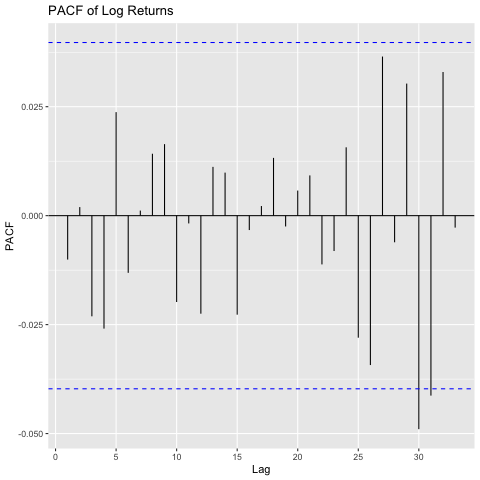
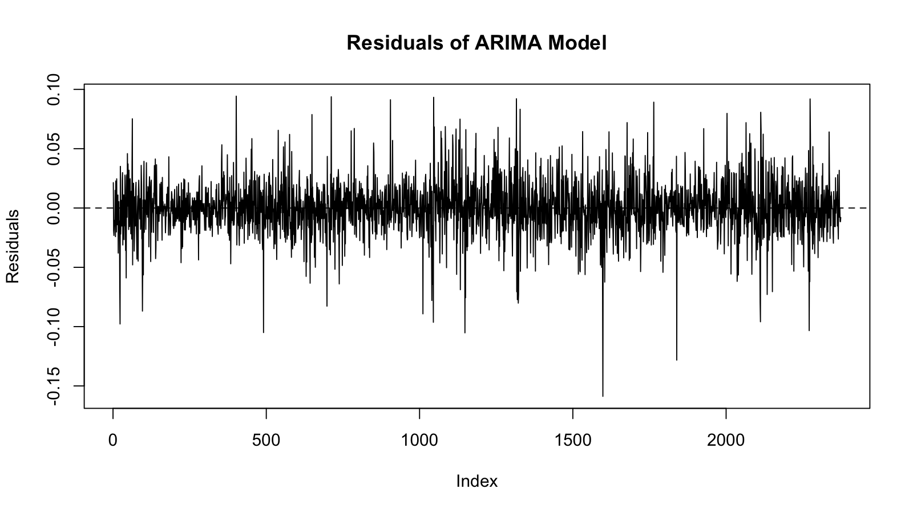

This project analyzes stock price dynamics using ARIMA and GARCH models.
(Replace these placeholders with your plots)



# Load data
data <- read.csv("data.csv")
# Log returns
log_returns <- diff(log(data$price))
# ADF test
library(tseries)
adf.test(log_returns)
# ARIMA model
model <- arima(log_returns, order=c(1,0,1))
# GARCH model
library(rugarch)
spec <- ugarchspec()
fit <- ugarchfit(spec, log_returns)